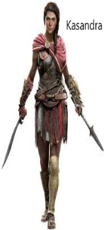

Informacje
Assassin’s Creed Odyssey – przygodowa gra akcji stworzona przez kanadyjskie studio Ubisoft Quebec i wydana przez
Ubisoft. Jest to jedenasta część serii Assassin’s Creed, jej poprzedniczką jest Assassin’s Creed Origins.
Akcja gry dzieje się w 431 r. p.n.e. w czasach wielkiej wojny peloponeskiej i jej fabuła łączy się z fabułą poprzednich części.
Gra została wydana 5 października 2018 na całym świecie na platformy Microsoft Windows, PlayStation 4, Xbox One
oraz (tylko w Japonii) na Nintendo Switch.
Fabuła
Gracz wciela się w jednego z dwóch dostępnych bohaterów – Aleksiosa lub Kasandrę (jednakże studio powiedziało
oficjalnie, że to Kasandra jest kanoniczną główną bohaterką). Bohater jest misthiosem – greckim najemnikiem. Przed
laty jego ojciec zrzucił go z góry Tajget niedaleko Sparty, za co bohater ma do niego żal. Cudem uniknąwszy śmierci,
uciekł na Kefalonię, gdzie spotkał Markosa, z którym następnie spędził kilka lat. Po jakimś czasie spotkał
tajemniczego Elpenora, członka sekty Czcicieli Kosmosa, która potajemnie władała całą Grecją. Celem bohatera jest
eliminacja poszczególnych członków sekty. Dodatkową motywacją jest jego rodzeństwo, które okazuje się być jednym z
członków organizacji. Fabuła składa się z trzech wątków – eliminacji Czcicieli, poszukiwania rodziny bohatera i
zabezpieczenia legendarnej Atlantydy.
Główna bohaterka(bohater)
